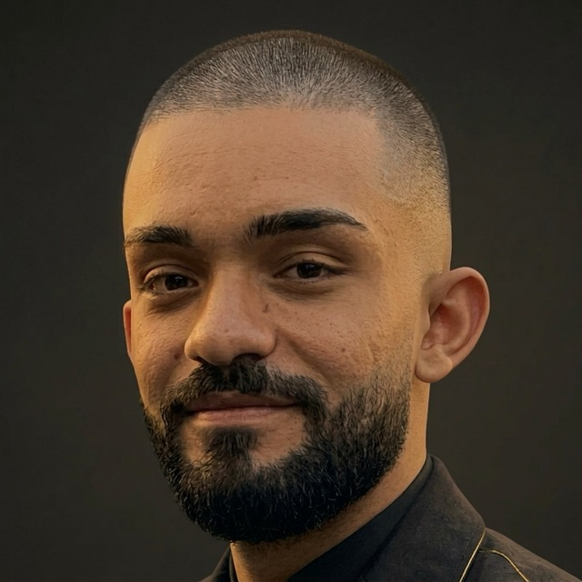
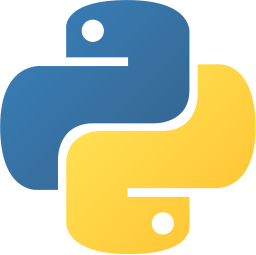
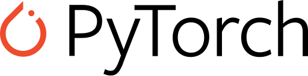
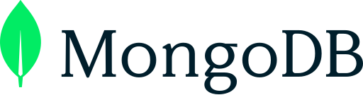
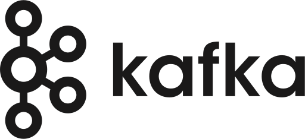
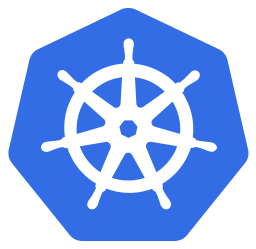

PhD — Physical & Engineering Sciences for AI, Innovation and Sustainability
Università degli Studi "Guglielmo Marconi"
Nov 2025 — present
CurrentAI engineer · Researcher · PhD candidate — Bologna, Italy
Bridging the frontier between symbolic intelligence and neural perception — in research and in production.
9+ years in engineering · 9 peer-reviewed publications · 172k documents a day in production

I'm a software engineer turned AI researcher, with over nine years of hands-on experience building systems that scale — from e-invoicing platforms processing millions of documents for Italian public administration, to production LLM pipelines handling 172,000+ insurance documents daily.
Today I work at Leithà (Unipol Group), where I lead the development of specialized extraction and classification pipelines powered by fine-tuned language models. My work bridges the gap between cutting-edge AI research and high-throughput production systems.
As a PhD candidate at Università Guglielmo Marconi, I investigate neuro-symbolic approaches to natural language understanding — specifically how hyperbolic geometry and symbolic knowledge structures can augment neural representations. My flagship project, JENeSyM, integrates WordNet with neural embeddings in a Poincaré manifold.
I've collaborated with Professor Guido Vetere on AI systems presented at IEEE MetroXRAINE and HHAI 2023, and I lecture on educational technologies at the postgraduate level. Research and engineering are not opposites for me — they are the same conversation.

Python
PyTorch Google Cloud AWS
MongoDB
Kafka
Kubernetes Terraform172k+
At Leithà | Unipol Group, I designed and deployed a cascaded LLM architecture that processes over 172,000 insurance documents every day in production — reliably and at scale.
96.4%
By fine-tuning Qwen 3 8B on domain-specific data at Leithà, I achieved 94% precision and a 96.4% F1-score on structured extraction from complex insurance documents.
€500k
At Leithà, an AI text-mining pipeline I built to analyse insurance appraisals led to pricing model revisions that generated a simulated net gain of €500k on fire and atmospheric guarantees.
10M+
At Engineering SpA, I helped build NoTI-ER — the first Italian platform fully compliant with PEPPOL — processing ~10 million e-invoicing documents for public administrations with over 98% uptime.
€20M+
As part of a 10-person team at Leithà, I co-developed an insurance price estimation platform that now generates an annual margin exceeding €20 million for the Unipol Group.
82%
At Leithà, I distilled Gemini 2.5 Pro into a lightweight 30M-parameter model running entirely on CPU with 200ms latency — a binary classifier reaching ~70% precision on real production data and 82% alignment with Gemini 2.5 Pro, at a fraction of the inference cost.
93%
As a separate case, I later tackled the same classification task as an ontology-based AI agent, reaching 93% precision on business tagging — combining a domain ontology with agentic reasoning for more accurate and explainable categorisation.
94%
At Leithà, I led the development of a multi-agent system for deep insurance policy analysis. It extracts structured data, grounds every field to its exact source page(s) in the document, and cross-links related information. Achieves a mean F1 of 94% per document across 20–30 page insurance policies.
2% → 25%
Upgraded a multi-agent automation system for ServiceNow IT tickets, driving user adoption from 2% to 25%.
Text-to-SQL
Built a natural language interface for BeRebel's BI team, enabling non-technical users to query database reports directly.
Agentic
Engineered an explorative AI agent that dynamically builds ontologies to match customer profiles with tailored insurance products.
CPU RAG
Deployed a low-latency CPU-bound RAG system for customer service, using semantic chunking and agentic filtering.
XAI
Designed an interpretable classification pipeline combining custom fine-tuned models, Gemini, and SHAP feature attribution.
9
Peer-reviewed articles and conference proceedings across Q1/Q2 journals and top-tier venues in AI, NLP, and Software Engineering.
PhD — Physical & Engineering Sciences for AI, Innovation and Sustainability
Università degli Studi "Guglielmo Marconi"
Nov 2025 — present
CurrentMSc — Computer Engineering, Digital Transformation & Data Science
Università degli Studi "Guglielmo Marconi"
Aug 2023 — May 2025
BSc — Computer Engineering
Università degli Studi "Guglielmo Marconi"
Mar 2019 — Mar 2022
Diploma — Business Information Systems
I.T.C. Pier Crescenzi, Bologna
2011 — 2016